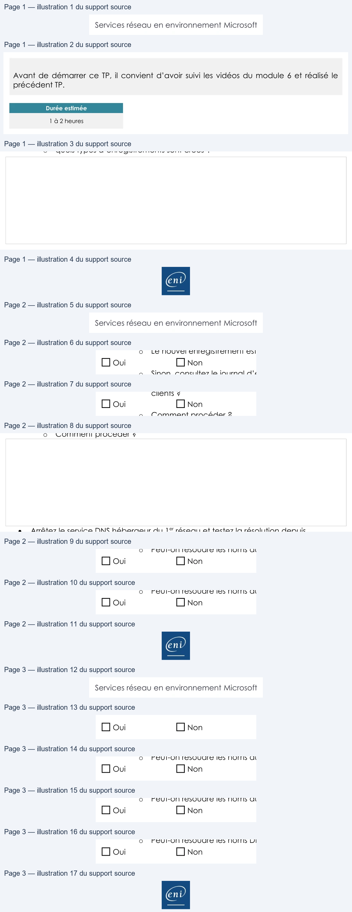

Transcription du document du Drive TSSR. La mise en forme est adaptée au Web ; les compléments IA du portail sont présentés séparément.
Page 1
Services réseau en environnement Microsoft
DNS hébergeur et
redondance
TP du Module 06 – Le service DNS
Avant de démarrer ce TP, il convient d’avoir suivi les vidéos du module 6 et réalisé le
précédent TP.
Durée estimée
1 à 2 heures
Énoncé
Prérequis
:

Avoir réalisé le TP précédent du Module 05.
Un serveur DNS sera à mettre en place dans le réseau 192.168.0.0/24 ainsi que dans
le réseau 192.168.1.0/24.
Le routage entre les deux réseaux doit être fonctionnel.
Enregistrements dynamiques
:
Sur le serveur DNS hébergeur, configurez les zones principales pour permettre
l’enregistrement dynamique des clients.
Sur les postes clients, configurez le suffixe DNS principal.
Vérifiez la présence des nouveaux enregistrements DNS :
o
avec la console DNS sur le serveur DNS hébergeur
o
avec la commande nslookup
o
quels types d’enregistrements sont créés ?
Page 1/3
© ENI – Tous droits réservés
Page 2
Services réseau en environnement Microsoft
Mise en œuvre de la redondance DNS
:
Vérifiez au préalable que le routage est opérationnel entre les deux réseaux.
Vous réaliserez un schéma des infrastructures.
Sur le serveur DNS hébergeur du réseau 192.168.0.0/24 :
o
Configurez les zones principales, et le transfert de zone pour permettre le
transfert à partir du serveur DNS hébergeur du réseau 192.168.1.0/24.
Sur le serveur DNS du réseau 192.168.1.0/24 :
o
Configurez les zones secondaires et le transfert de zone pour permettre le
transfert à partir du serveur DNS du réseau 192.168.0.0/24.
Vérifiez que le transfert est fonctionnel en créant un nouvel enregistrement dans la
zone principale :
o
Le nouvel enregistrement est-il créé ?
Oui
Non
o
Sinon, consultez le journal d’évènements DNS, vérifiez les connexions…
Validation de la redondance DNS
Paramétrez les clients de chacune des infrastructures :
o
Pour les clients du réseau 192.168.0.0/24 :
DNS préféré = Serveur DNS hébergeur du réseau d’appartenance.
DNS auxiliaire = Serveur DNS hébergeur du second réseau.
o
Pouvez-vous configurer les suffixes DNS de deux domaines sur tous les
clients ?
Oui
Non
o
Comment procéder ?
Arrêtez le service DNS hébergeur du 1er réseau et testez la résolution depuis
l’infrastructure du 2e réseau.
o
Peut-on résoudre les noms du 1er Réseau ?
Oui
Non
o
Peut-on résoudre les noms du 2e réseau ?
Oui
Non
o
Peut-on résoudre les noms DNS publics ?
Page 2/3
© ENI – Tous droits réservés
Texte relevé dans les illustrations
Tableau du support — lecture structurée | Services réseau | | en environnement | | Microsoft |
| Miseen œuvre de laredondance DNS : | | | | | |
Tableau du support — lecture structurée | Sur le serveur DNS hébergeur du réseau 192 168 0 0/24 :
. . .
o Configurez les zones principales et le transfert de zone pour permettre le
, |
| transfert àpartir du serveur DNS hébergeur du réseau 192 168 1 0/24
. . . . |
Tableau du support — lecture structurée | Sur le serveur DNS du réseau 192 168 1 0/24 :
. . .
o Configurez les zones secondaires et le transfert de zone pour permettre le |
| transfert àpartir du serveur DNS du réseau 192 168 0 0/24
. . . . |
Tableau du support — lecture structurée | | Vérifiez que letransfert est fonctionnel en créant un nouvel enregistrement dans la | |
| | zone principale : | |
| | Le nouvel enregistrement est -il créé ?
o | |
| Oui | Non | |
| | Sinon consultez le journal d’évènements DNS vérifiez les connexions
o
, , … | |
| Validation de laredondance DNS | | | |
| | Paramétrez les clients de chacune des infrastructures : | |
| | o Pour les clients du réseau 192 168 0 0/24 :
. . . | |
| | DNS préféré = Serveur DNS hébergeur du réseau d’appartenance
. | |
| | DNS auxiliaire = Serveur DNS hébergeur du second réseau
. | |
| | o Pouvez-vous configurer les suffixes DNS de deux domaines sur tous les | |
| | clients ? | |
| Oui | Non | |
| | Comment procéder ?
o | |
| | | |
| | Arrêtez le service DNS hébergeur du 1er réseau et testez la résolution depuis | |
| | l’infrastructure du 2e réseau
.
o Peut -on résoudre les noms du 1erRéseau ? | |
| Oui | Non | |
| | o Peut -on résoudre les noms du 2eréseau ? | |
| Oui | Non | |
| | o Peut -on résoudre les noms DNS publics ? | |
Page2/3
©ENI | | | – Tous droits réservés |
Page 3
Services réseau en environnement Microsoft
Oui
Non
Redémarrez le service DNS hébergeur du 1er réseau.
o
Peut-on résoudre les noms du 1er Réseau ?
Oui
Non
o
Peut-on résoudre les noms du 2e réseau ?
Oui
Non
o
Peut-on résoudre les noms DNS publics ?
Oui
Non
Vous réaliserez un schéma montrant les chaînes de résolutions DNS.
Page 3/3
© ENI – Tous droits réservés
Texte relevé dans les illustrations
Tableau du support — lecture structurée | | Services réseau | | en environnement | | Microsoft |
| | | | | | |
| Oui | Non | | | | |
| Redémarrez le service DNS hébergeur du 1erréseau
. | | | | | |
| o | Peut -on résoudre les noms du 1erRéseau ? | | | | |
| Oui | Non | | | | |
| o | Peut -on résoudre les noms du 2eréseau ? | | | | |
| Oui | Non | | | | |
| o | Peut -on résoudre les noms DNS publics ? | | | | |
| Oui | Non | | | | |
| Vous | réaliserez un schéma montrant les chaînes de résolutions DNS
. | | | | |

Illustrations du support Drive — pages 1 à 3. Les images sont regroupées sans redimensionnement ; aucun contenu généré par IA.